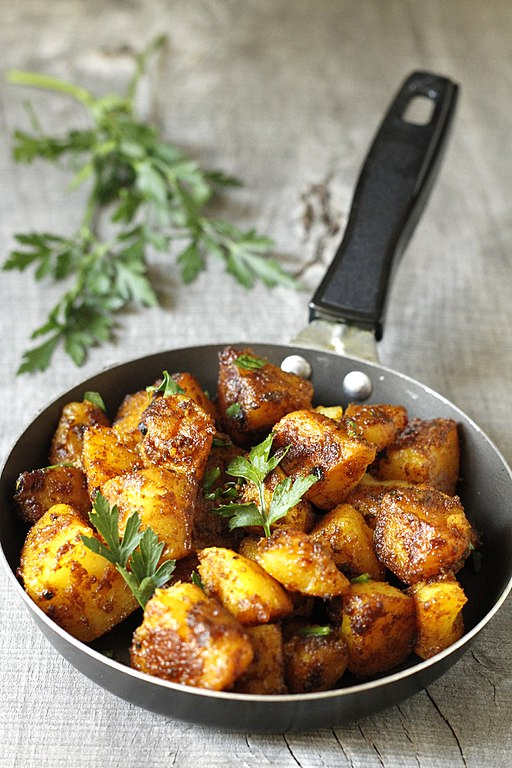

Jeera Aloo, Cumin Spiced Potatoes

Description
"Jeera Aloo is a typical vegetarian Indian dish which is often served
as a side dish and normally goes well with hot puris, chapatti,
roti or dal. Its main ingredients are potatoes (aloo),
cumin seeds (jeera) and Indian spices. Other ingredients
are red chili powder, ginger, coriander powder, curry leaves,
vegetable oil and salt. In its traditional form the dish is
not hot, but it could be spiced up by adding powdered cayenne
pepper. Other variations of the dish make use of sweet potatoes
instead of regular ones."-Wikipedia
Ingredients
- 2 Cups water
- 2 Cups potatoes, cubed
- 2 Tbsp ghee
- 1/2 serrano pepper(optional), cut into large slices
- 2 tsp cumin seeds
- 1/4 tsp tumeric(optional)
- 1 tsp salt
Steps
- Add water to instant pot, then place potatoes in steamer basket and add to pot.
- Set to pressure cook on high for 6 minutes.
- Quick release as soon as potatoes finish. Remove steamer basket and set aside.
- Clean out instant pot and wipe dry. Set to Saute on high.
- Add ghee to pot. When melted, add cumin seeds and pepper. Saute until aromatic, or about 15 seconds.
- Stir salt, and tumeric if using.
- Add potatoes and gently stir to coat evenly without breaking.